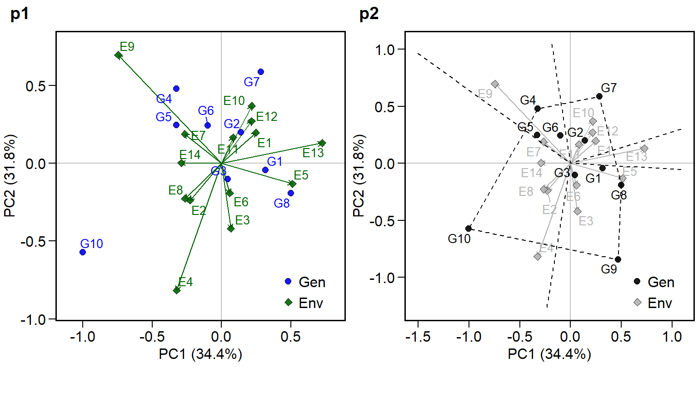
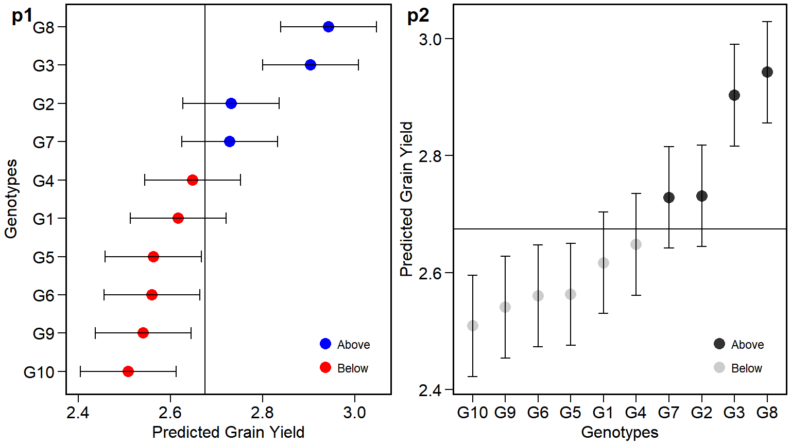

The METAAB (Multi-environment Trials Analysis using AMMI and BLUP) package provides useful functions for analyzing multi-environment trial data using Additive Main Effects and Multiplicative Interaction (AMMI) and Best Linear Unbiased Prediction (BLUP) models. The main features include, but are not limited to:
- Cross-validation procedures for AMMI-family and BLUP models;
- Estimation AMMI models based on number of IPCAs;
- Prediction in mixed-effect models;
- Variance components and genetic parameters in mixed-effect models;
- Graphics tools for generating biplots
Dependences
METAAB depends on the following R packages.
-
gridfor arranging plots -
ggplot2for graphics -
ggrepelfor avoiding overlaps text in plots -
magrittrfor the %>% opperator -
dendextedandgplotsfor dendrograms -
dplyrfor data manipulation -
lme4andlmerTestfor mixed-effect models
Installing
The latest development version can be download from GitHub by running
install.packages("devtools")
devtools::install_github("TiagoOlivoto/METAAB")Brief examples
The package kableExtra and cowplot were used to generate the tables and arranging the graphics of this material.
The METAAB contains some datasets for examples. We will use the example data_ge that contains data from two variables assessed in 10 genotypes growing in in 11 environments. For more details see ?data_ge
## Classes 'tbl_df', 'tbl' and 'data.frame': 420 obs. of 5 variables:
## $ ENV: Factor w/ 14 levels "E1","E10","E11",..: 1 1 1 1 1 1 1 1 1 1 ...
## $ GEN: Factor w/ 10 levels "G1","G10","G2",..: 1 1 1 3 3 3 4 4 4 5 ...
## $ REP: Factor w/ 3 levels "1","2","3": 1 2 3 1 2 3 1 2 3 1 ...
## $ GY : num 2.17 2.5 2.43 3.21 2.93 ...
## $ HM : num 44.9 46.9 47.8 45.2 45.3 ...AMMI model
Fitting the model
The AMMI model is fitted with the function WAAS.AMMI(). For more details, please see ?WAAS.AMMI.
model <- WAAS.AMMI(data_ge,
resp = GY,
gen = GEN,
env = ENV,
rep = REP)## Done!Biplots
ggplot2-based graphics are easily obtained in METAAB package. For example, the well-known AMMI2 biplot may be obtained as follows. Please, note that since WAAS.AMMI() function allows analyzing multiple variables at the same time, e.g., resp = c(v1, v2, …), the output model is a list, in this case with one element, GY.
library(cowplot)
p1 = plot.scores(model$GY)
p2 = plot.scores(model$GY,
type = 1,
polygon = TRUE,
col.gen = "black",
col.env = "gray70",
col.segm.env = "gray70",
axis.expand = 1.5)
plot_grid(p1, p2, labels = c("p1","p2"))
S3 method predict()
The S3 method predict() is implemented for objects of class WAAS.AMMI and may be used to estimate the response of each genotype in each environment considering different number of Interaction Principal Component Axis (IPCA). For example, we will use four IPCA (number of significant IPCAs) to estimate the variable GY using the model object.
library(kableExtra)
predicted = predict(model, naxis = 4)
predicted = predicted$GY[1:5,]
kable(predicted, "html") %>%
kable_styling(bootstrap_options = "striped", "condensed", full_width = F)| ENV | GEN | Y | resOLS | Ypred | ResAMMI | YpredAMMI | AMMI0 |
|---|---|---|---|---|---|---|---|
| E1 | G1 | 2.365787 | -0.0843311 | 2.450118 | 0.07115484 | 2.521273 | 2.450118 |
| E1 | G10 | 1.974073 | -0.3435891 | 2.317662 | -0.35391141 | 1.963751 | 2.317662 |
| E1 | G2 | 2.901747 | 0.3111581 | 2.590589 | 0.29035016 | 2.880939 | 2.590589 |
| E1 | G3 | 2.888587 | 0.0868009 | 2.801786 | -0.04518795 | 2.756598 | 2.801786 |
| E1 | G4 | 2.588567 | 0.1002096 | 2.488357 | 0.04942370 | 2.537781 | 2.488357 |
BLUP model
The implementation of linear-mixed effect models to predict the response variable in MET is based on the WAASB() function. The “mixed-effect version” of the already fitted AMMI model, where genotype and genotype-vs-environment interaction are assumed to be random effects is then obtained as follows
model2 <- WAASB(data_ge,
resp = GY,
gen = GEN,
env = ENV,
rep = REP)## Done!Plotting the BLUPs for genotypes
p1 = plot.blup(model2$GY)
p2 = plot.blup(model2$GY,
prob = 0.1,
col.shape = c("gray20", "gray80")) + coord_flip()
plot_grid(p1, p2,
labels = c("p1", "p2"))
BLUPS for genotype-vs-environment interaction
data = model2$GY$BLUPgge[1:5,]
kable(data, "html") %>%
kable_styling(bootstrap_options = "striped", "condensed",
position = "left", full_width = F, font_size = 12)| ENV | GEN | BLUPge | BLUPg | BLUPg+ge | Predicted | LL | UL |
|---|---|---|---|---|---|---|---|
| E1 | G1 | -0.0620870 | -0.0575249 | -0.1196119 | 2.401071 | 2.297567 | 2.504575 |
| E1 | G10 | -0.2430051 | -0.1655022 | -0.4085073 | 2.112176 | 2.008672 | 2.215680 |
| E1 | G2 | 0.2066405 | 0.0569866 | 0.2636271 | 2.784311 | 2.680807 | 2.887814 |
| E1 | G3 | 0.0884704 | 0.2291542 | 0.3176246 | 2.838308 | 2.734804 | 2.941812 |
| E1 | G4 | 0.0600873 | -0.0263523 | 0.0337350 | 2.554418 | 2.450914 | 2.657922 |
Extending the METAAB package
The complete functionality of the METAAB package may be view at https://tiagoolivoto.github.io/METAAB/index.html. You are welcome to visit it.